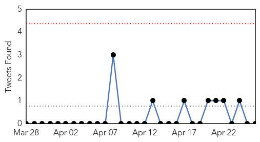
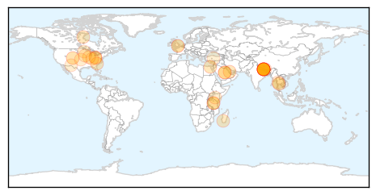
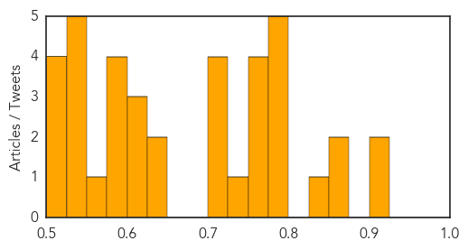

Toggle navigation
Early Warning
Daily Alerts
Unknown
Apr 26, 2015
Compare to:
-
Dengue Fever
Hemmorhagic Fever
Mold/Fungal Infection
Influenza
Meningitis
Pertussis / Whooping Cough
Middle East Respiratory Syndrome
Cholera
Hepatitis
Chikungunya
Yellow Fever
Bubonic Plague
West Nile Virus
Swine Flu
Ebola
Measles
Mumps
30 Day Trends
Web: 0
alerts
, 0
warnings
Twitter: 0
alerts
, 0
warnings
Top Articles:
0.917
Chicago Tribune
0.910
The world windows to Thailand
0.866
Nepal aid effort gets underway
0.851
Botulism Found in Food Has Led to Health Emergency
0.832
Missing drugs
0.800
8 still being treated, 752 discharged from hospital in Egypt’s mass poisoning
0.784
World Health Organization, WHO gives emergency health kits, funds to quake-hit Nepal
0.781
KUNA : Two corona cases in Kingdom past week -- ministry
0.779
WHO sends emergency health kits, funds to Nepal
0.776
Household Pets Can Transmit Infections To People
0.775
Malaria continues to sting Keonjhar, situation alarming
0.772
WHO gives emergency health kits, funds to quake-hit Nepal - Nepal
0.771
HMC warns travellers to take precautions against malaria
0.755
What You Really Need to Know About Ice Cream Food Recalls and Listeria
0.735
Botulism Outbreak in Ohio Kills One, Hospitalizes 28
0.719
Safe Water Brings Hygiene and Sanitation to Rural Madagascar - Madagascar
0.716
Saudi- Ministry of Health: Corona Infection Cases Down for 5th Consecutive Week
0.710
World's first malaria vaccine could be available by October
0.707
Worried sick over canine flu? Tips to help protect your pup
0.646
World's first malaria vaccine could be available by October
0.636
World's first malaria vaccine could be available by October
0.614
HIV patients today 'can live long, healthy lives'
0.604
Quake overwhelms Nepal's weak healthcare system
0.604
Bird flu: National Guard to help, but virus could be around for years
0.594
Press Release
0.592
Your Northwoods News Leader and NBC Affiliate
0.585
Kenya : Report exposes rising inefficiency in counties as healthcare deteriorates
0.584
30-member AIIMS team heads to Kathmandu
0.566
Oxfam will begin delivering aid to thousands of people in Nepal tomorrow following Saturday's devastating earthquake
0.549
UN to mount major relief effort in Nepal: Ban Ki-moon
0.548
UN to mount major relief effort in Nepal: Ban Ki-moon
0.541
STDs a growing problem in El Paso
0.535
Dayton And Franken Talk Bird Flu At Central Minn. Turkey Farms « CBS Minnesota
0.530
Quake overwhelms Nepal's weak healthcare system
0.522
UN to mount major relief effort in Nepal: Ban Ki-moon
0.519
Nepal Earthquake Poses Challenge to International Aid Agencies
0.513
Mission agencies offer Nepal earthquake help amid fears for their own staff
0.504
Superbug alert at Kate Middleton's hospital as eight patients infected with antibiotic-resistant killer
Top Tweets:
No tweets found for Apr 26, 2015
Web/News Articles
Tweets

Article Locations

Article Confidences
